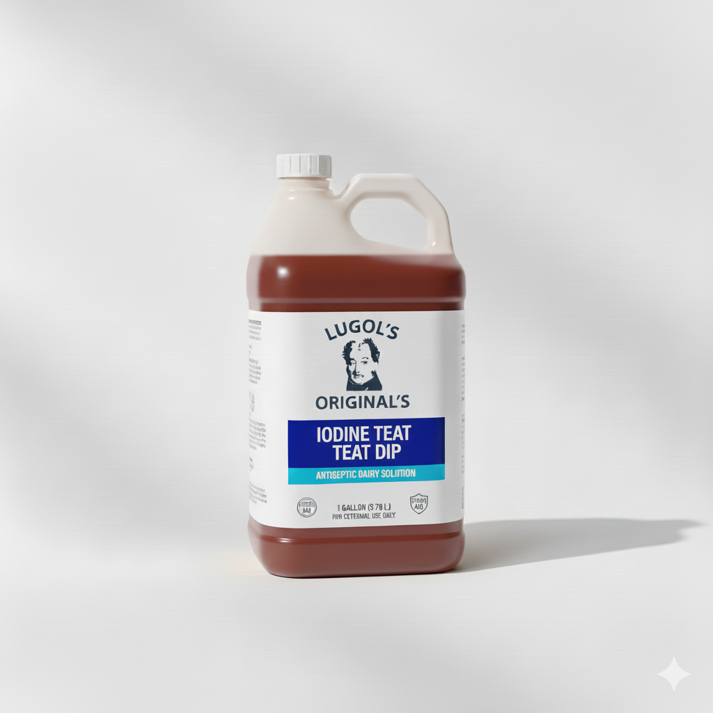

An Iodine Company. Nothing Else.
The Iodine Collection
01 / 10

Quality & Compliance
Registered. Verified. Made in the USA.
Lugol's Naturals is EPA, FDA, and DEA registered. Every product is manufactured in our own facility here in the United States, using only American-made iodine, with every batch lab-tested for purity and issued a Certificate of Analysis.
EPA / FDA / DEA
Registered Facility
USA
Made & Tested
COA
Every Batch Tested
10
Core Formulations
Who We Are
We Are an Iodine Company. Full Stop.
Lugol's Naturals exists to do one thing exceptionally well: formulate and manufacture iodine-based antiseptic solutions. We don't dabble in adjacent categories or dilute our focus — every product we ship, from teat dips to surgical preps, is built on the same iodine chemistry and the same standard of potency.
Dairy producers and medical professionals trust us because we don't treat iodine as a side ingredient — it's the entire business.